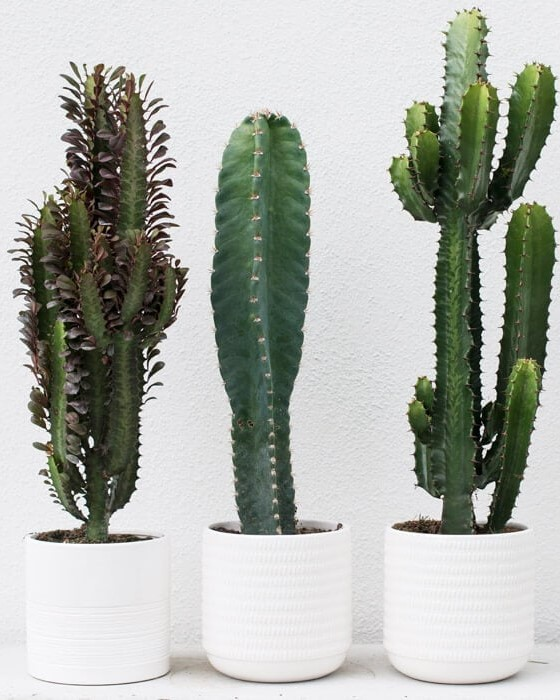
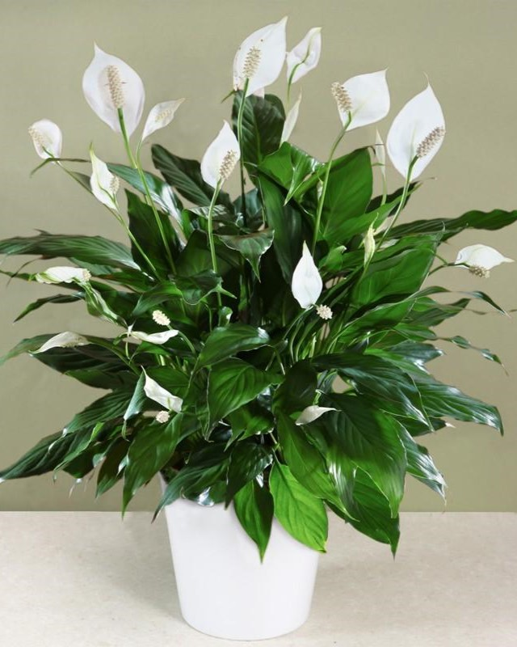
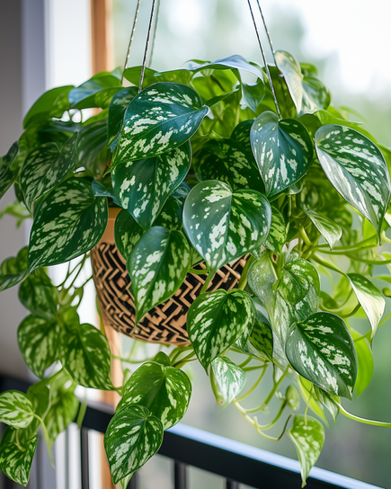
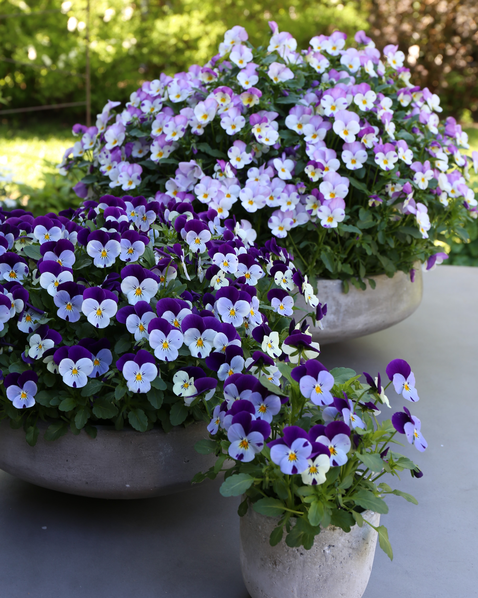

Planter
Å velge riktig plante for hagen din er viktig av flere grunner. Planter gir ikke bare estetisk glede, de kan også forbedre miljøet, redusere vedlikeholdsbehov, og til og med ha helsefordeler. Ved å velge planter som passer til klimaet ditt og dine behov, kan du skape et vakkert og funksjonelt uterom som øker verdien på eiendommen din. Her har vi samlet våre favouritt plantefamilier!
Kaktus
Vedlikehold ★ ☆ ☆ ☆ ☆
Kaktusen er en robust plante tilpasset tørre forhold med saftige stammer og piggete overflate. Den krever lite vann og trives godt i sollys.
Fredslilje
Vedlikehold ★ ★ ☆ ☆ ☆
Pothos er en populær hengeplante med grønne og hvite, hjerteformede blader. Den trives både i sollys og lavt lys og er lett å stelle.
Pothos
Vedlikehold ★ ☆ ☆ ☆ ☆
Fredsliljen, kjent for sine mørkegrønne blader og hvite blomster, trives i delvis skygge og bidrar til å forbedre luftkvaliteten innendørs.
Fuchsia

Vedlikehold ★ ★ ★ ☆ ☆
Fuchsia er elegant med hengende blomster i en rekke farger. Den trives i delvis skygge og krever jevn fuktighet i jorden. Beskjæring av visne blomsterhoder og regelmessig gjødsling er anbefalt.
Stemorsblomst
Vedlikehold ★ ★ ☆ ☆ ☆
Stemorsblomster, med sine delikate blomster i en rekke farger, er et populært valg for hager. De trives best i delvis skygge og krever jevn fuktighet i jorden for å blomstre rikelig gjennom sommeren.
Pelargonia

Vedlikehold ★ ★ ★ ☆ ☆
Pelargonia er en fargerik blomstrende plante som trives i sollys. Den krever moderat vanning og regelmessig fjerning av visne blomster for å oppmuntre til kontinuerlig blomstring gjennom sesongen.
Rosebusk

Vedlikehold ★ ★ ★ ★ ☆
Rosebusker krever regelmessig beskjæring, vanning og gjødsling for å blomstre rikelig. De er utsatt for sykdommer og skadedyr og trenger derfor jevnlig tilsyn for å opprettholde deres helse og skjønnhet.
Hibiskus